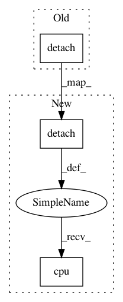

7d2f2ed761ffc49feb337bbee878e8256af568a8,livelossplot/output_plugins/matplotlib_subplots.py,Plot2d,_predict_pytorch,#Plot2d#,107
Before Change
def _predict_pytorch(self, model, x_numpy):
import torch
x = torch.from_numpy(x_numpy).float()
return model(x).softmax(dim=1).detach().numpy()
def predict(self, model, X):
// e.g. model(torch.fromnumpy(X)).detach().numpy()
After Change
def _predict_pytorch(self, model, x_numpy):
import torch
x = torch.from_numpy(x_numpy).to(self.torch_device).float()
return model(x).softmax(dim=1).detach().cpu().numpy()
def predict(self, model, X):
// e.g. model(torch.fromnumpy(X)).detach().numpy()
In pattern: SUPERPATTERN
Frequency: 3
Non-data size: 3
Instances
Project Name: stared/livelossplot
Commit Name: 7d2f2ed761ffc49feb337bbee878e8256af568a8
Time: 2020-03-17
Author: bartlomiej.olechno@gmail.com
File Name: livelossplot/output_plugins/matplotlib_subplots.py
Class Name: Plot2d
Method Name: _predict_pytorch
Project Name: jantic/DeOldify
Commit Name: 819c73e2c09db24a8f166fc5df2b2ab0d2fa66c5
Time: 2019-01-24
Author: jsa169@gmail.com
File Name: fasterai/tensorboard.py
Class Name: HistogramTBRequest
Method Name: __init__
Project Name: google/uis-rnn
Commit Name: 31072dcaecbe5a85f56ddd5780d749a0f18a6082
Time: 2018-11-07
Author: aonan@google.com
File Name: model/uisrnn.py
Class Name: UISRNN
Method Name: save